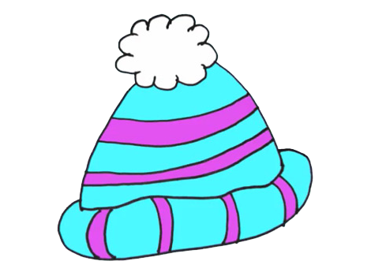

Su mamá le contó que era muy divertido, que un día calló en una flor, otro día en una casa y otro día en una calle muy bonita.
La gotita pequeña ,con mucho miedo, agarró de la mano a su mamá, cerró los ojos y se dejó caer.
Las dos gotitas de agua cayeron junto con las demás, formando una gran lluvia plateada. La mamá mojó la hoja de un árbol, se resbaló y cayó al suelo produciendo un gran ruido: "plaf".Su hija, como era más delgadita, tardó más en caer, se posó sobre un paraguas rojo realizando un ruidito: "clic".
Después resbaló y cayó en la gorro de una niña , "clic", se deslizó por su nariz para más tarde gotear en su abrigo azul.
Al final acabó en unas botas de agua  . Estuvo un buen rato en la bota hasta que la niña comenzó a andar y cayó a un gran charco que había en el suelo.
. Estuvo un buen rato en la bota hasta que la niña comenzó a andar y cayó a un gran charco que había en el suelo.
Allí encontró a su mamá a quien le dio un gran abrazo.
Después de contarse el largo viaje, quedaron fundidas en el gran charco de agua.
Más tarde, salió el sol, se reflejó en el charco y apareció un bonito arco iris.